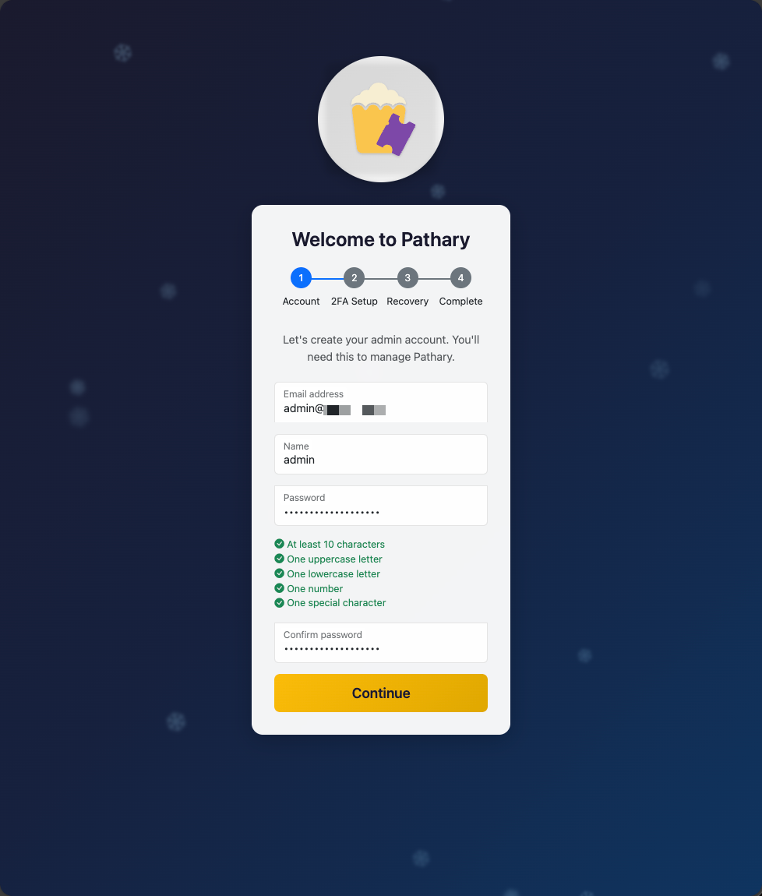
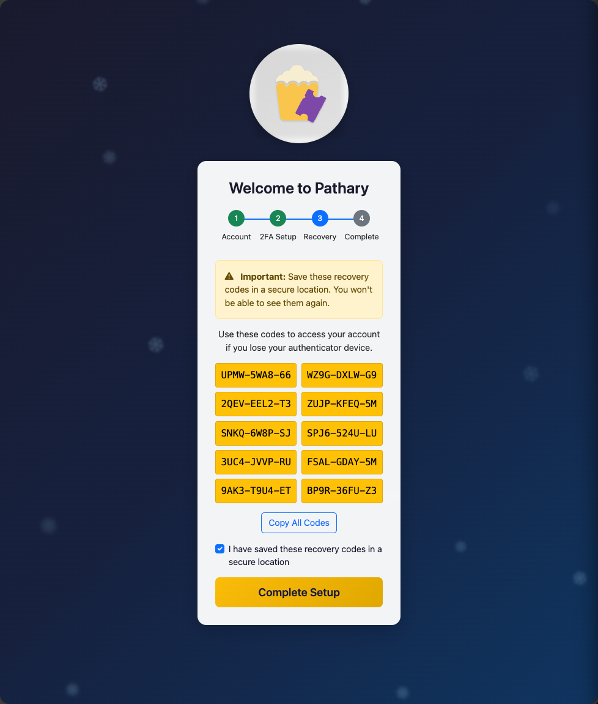

First-Time Setup Guide¶
This guide walks you through the initial setup process for your Pathary instance. The setup wizard will help you create your first admin account with two-factor authentication (2FA) enabled.
Overview¶
On first installation, Pathary requires you to complete a one-time setup wizard to create an admin account. This wizard ensures your instance is properly secured from the start by:
- Creating an admin account with a strong password
- Enabling two-factor authentication (2FA) using TOTP
- Generating recovery codes for account recovery
Important: The setup wizard is only accessible when no users exist in the database. Once completed, it becomes permanently inaccessible.
Prerequisites¶
Before starting the setup wizard, ensure:
- Pathary is installed and running (via Docker or manual installation)
- The application is accessible at your configured URL (e.g.,
http://localhostorhttps://pathary.yourdomain.com) - The database is properly configured and migrations have been applied
Accessing the Setup Wizard¶
Navigate to your Pathary instance in a web browser. If no admin account exists, you'll be automatically redirected to /init.
Alternatively, access the wizard directly at: http://your-pathary-url/init
Step 1: Create Admin Account¶
The first step collects your basic account information and sets up a secure password.

Required Information¶
- Email Address: Your admin email address (used for login)
- Name: Your display name
- Password: Must meet the following requirements:
- At least 10 characters
- One uppercase letter
- One lowercase letter
- One number
- One special character
- Confirm Password: Must match your password exactly
Password Requirements¶
As you type your password, the requirements checklist updates in real-time:
- ✅ Green checkmark: Requirement met
- ⚪ Gray circle: Requirement not met
The confirmation field will show: - Green outline: Passwords match - Red outline: Passwords don't match
Next Step¶
Click Continue to proceed to 2FA setup. Your account information is stored temporarily in session and won't be saved to the database until you complete all steps.
Step 2: Two-Factor Authentication Setup¶
Pathary requires two-factor authentication for all admin accounts to enhance security. This step configures TOTP (Time-based One-Time Password) authentication.
Setting Up 2FA¶
You'll need an authenticator app on your smartphone or computer. Recommended apps include:
- Google Authenticator (iOS/Android)
- Authy (iOS/Android/Desktop)
- 1Password (iOS/Android/Desktop)
- Microsoft Authenticator (iOS/Android)
- Any other TOTP-compatible authenticator
Configuration Methods¶
Method 1: Scan QR Code (Recommended)
- Open your authenticator app
- Tap "Add Account" or "Scan QR Code"
- Point your camera at the QR code displayed on screen
- The app will automatically add your Pathary account
Method 2: Enter Secret Manually
If you can't scan the QR code:
- Click the Copy button below the secret code
- In your authenticator app, choose "Enter Setup Key" or "Manual Entry"
- Paste the secret code
- Enter your Pathary account name (e.g., "Pathary Admin")
Verify 2FA¶
- Open your authenticator app
- Find your Pathary account
- Enter the 6-digit code shown in the app
- Click Verify & Continue
The code refreshes every 30 seconds. If verification fails, wait for a new code and try again.
Step 3: Save Recovery Codes¶
Recovery codes are essential for regaining access to your account if you lose your authenticator device.

What Are Recovery Codes?¶
Recovery codes are single-use backup codes that can be used instead of your 2FA code during login. You'll receive 10 codes in the format: XXXX-XXXX-XX
Saving Your Codes¶
Important: You will only see these codes once. Store them securely!
Recommended Storage Methods:
- Password Manager: Store in a secure vault (1Password, Bitwarden, etc.)
- Encrypted File: Save to an encrypted USB drive or cloud storage
- Physical Copy: Print and store in a safe location
How to Copy:
- Click Copy All Codes to copy all codes to clipboard
- Paste into your chosen storage location
Before Proceeding¶
Check the box confirming: "I have saved these recovery codes in a secure location"
This enables the Complete Setup button.
Step 4: Setup Complete¶
Once you acknowledge saving the recovery codes, the wizard creates your admin account and applies all settings.
What Happens During Completion¶
The wizard performs these actions atomically:
- Creates admin user in the database (ID: 1)
- Saves TOTP configuration for 2FA
- Stores recovery codes (hashed with bcrypt)
- Marks setup as completed (prevents re-running the wizard)
- Logs security events (setup completion, 2FA enabled)
Next Steps¶
Click Go to Login to access the login page at /login.
Logging In¶
After completing setup, log in using:
- Email: The email you provided in Step 1
- Password: The password you created
- 2FA Code: Open your authenticator app and enter the current 6-digit code
First Login¶
On your first login, you may be asked to:
- Trust this device: Optional. If enabled, you won't need 2FA codes on this device for 30 days
- Update application settings: Configure TMDB API key and other global settings
Troubleshooting¶
Wizard Shows 404 Error¶
Cause: Setup has already been completed or a user exists in the database.
Solution: Access the login page at /login instead.
Can't Access /init After Installation¶
Cause: A user already exists in the database (possibly from a previous installation).
Solution: If this is a fresh install, reset the database:
# Using Docker
docker compose exec mysql mysql -u pathary -ppathary -e "DROP DATABASE IF EXISTS pathary; CREATE DATABASE pathary;"
docker compose exec app php vendor/bin/phinx migrate -c ./settings/phinx.php
# Manual installation
mysql -u pathary -p -e "DROP DATABASE IF EXISTS pathary; CREATE DATABASE pathary;"
php vendor/bin/phinx migrate -c ./settings/phinx.php
Warning: This permanently deletes all data. Only use on a fresh installation.
Lost Authenticator Device Before Completing Setup¶
Solution: Reload the page at /init to start over. Since the account isn't created until Step 4, your session data will be cleared and you can begin again.
Lost Authenticator Device After Completing Setup¶
Solution: Use a recovery code during login:
- Go to the login page
- Enter email and password
- When prompted for 2FA code, click "Use recovery code instead"
- Enter one of your saved recovery codes
- Important: Immediately set up 2FA again in Profile → Security settings
Session Expired During Wizard¶
Cause: You took too long between steps (session timeout).
Solution: Reload the page at /init to start fresh. The wizard clears session data on page load.
Password Requirements Too Strict¶
Rationale: Pathary enforces strong password requirements to protect your movie data and prevent unauthorized access. These requirements are non-configurable to ensure consistent security.
Alternative: Use a password manager (1Password, Bitwarden, etc.) to generate and store a strong password automatically.
2FA Code Rejected¶
Possible causes:
- Time sync issue: Ensure your device's clock is synchronized (most authenticator apps show a warning if time is off)
- Expired code: Wait for a new code (refreshes every 30 seconds)
- Wrong secret: If you manually entered the secret, ensure it's correct (try scanning QR code instead)
Security Notes¶
Why 2FA is Required¶
Pathary requires two-factor authentication for all admin accounts to:
- Protect against password theft or leaks
- Prevent unauthorized access even if your password is compromised
- Ensure your movie ratings, watchlists, and personal data remain secure
Recovery Code Best Practices¶
- Never share recovery codes with anyone
- Don't store codes in plain text on your computer
- Use each code only once (they're single-use)
- Regenerate codes if you suspect they've been compromised (Profile → Security)
Session Security¶
After completing setup:
- Sessions expire after inactivity
- Trusted devices remember your 2FA status for 30 days
- You can revoke trusted devices at any time in Profile → Security
Next Steps After Setup¶
Once logged in, configure your Pathary instance:
- Add TMDB API Key: Navigate to Admin → Server Settings → TMDB to enable movie data fetching
- Configure Email (Optional): Set up email notifications in Admin → Server Settings → Email
- Add Movies: Start building your movie collection by searching and adding movies from TMDB
- Set Up Integrations (Optional): Connect Plex, Jellyfin, Trakt, or other services
For detailed configuration guides, see:
Related Documentation¶
- Two-Factor Authentication - Managing 2FA settings
- Password Policy and Security - Understanding password requirements
- Authentication and Sessions - How login sessions work
- Docker Installation - Installing Pathary with Docker
- Manual Installation - Installing Pathary manually
Emergency Access¶
If you lose both your authenticator device and recovery codes, you'll be locked out of your account. To regain access:
Option 1: CLI Emergency Admin (Recommended)¶
Use the emergency admin CLI command to create a temporary admin account:
# Using Docker
docker compose exec app php bin/console.php user:emergency-admin
# Manual installation
php bin/console.php user:emergency-admin
This creates a temporary admin account with credentials displayed on screen. Use it to: 1. Log in to Pathary 2. Reset 2FA for your original account (or delete and recreate it) 3. Delete the emergency admin account
Option 2: Database Reset (Last Resort)¶
Warning: This deletes ALL data including movies, ratings, and users.
# Using Docker
docker compose exec mysql mysql -u pathary -ppathary -e "DROP DATABASE IF EXISTS pathary; CREATE DATABASE pathary;"
docker compose exec app php vendor/bin/phinx migrate -c ./settings/phinx.php
# Manual installation
mysql -u pathary -p -e "DROP DATABASE IF EXISTS pathary; CREATE DATABASE pathary;"
php vendor/bin/phinx migrate -c ./settings/phinx.php
After reset, access /init to run the setup wizard again.
Frequently Asked Questions¶
Can I skip 2FA setup?¶
No. Two-factor authentication is mandatory for all admin accounts to ensure security. There is no option to disable this requirement during setup.
Can I change my email or password later?¶
Yes. After logging in, navigate to Profile → Security to: - Change your password - Update your email address - Manage 2FA settings - Generate new recovery codes
What if I want to use a different authenticator app?¶
You can switch authenticator apps at any time:
- Disable 2FA in Profile → Security (requires password confirmation)
- Re-enable 2FA with your new authenticator app
- Save the new recovery codes
Can I create additional admin accounts?¶
Yes. After completing initial setup, log in and navigate to:
Admin → Users → Create User
Set the "Admin" flag when creating the new user. They can then enable 2FA in their profile settings.
Does the setup wizard work on mobile?¶
Yes. The setup wizard is fully responsive and works on mobile devices, tablets, and desktops. However, scanning QR codes is easier on mobile devices with a camera.
Support¶
If you encounter issues not covered in this guide:
- Check the GitHub Issues for known problems
- Search the Wiki for additional documentation
- Report bugs or request help by opening a new issue
Last Updated: 2026-01-13 Applies to: Pathary v1.0.0+